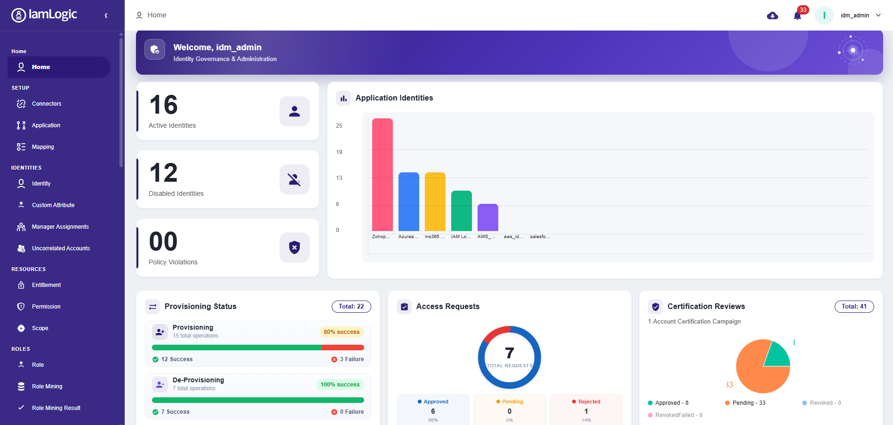

IamLogic IGA
Who has access? Why? Should they still?
IamLogic IGA answers identity governance's three questions continuously — with lifecycle automation, access certifications, SoD enforcement and audit evidence generated as you work.

The problem
Over-provisioned access, orphan accounts, manual reviews, compliance pressure
Every one of these is a lifecycle or governance failure — and every one shows up in RBI inspections, DPDP safeguard requirements and ISO 27001 audits. IGA fixes the process, not just the symptom.
Identity lifecycle management
Access that follows the employee record — automatically.
Joiners get role-based access before day one, movers are re-provisioned in real time on transfer or promotion (old access removed, new access granted), and leavers are deprovisioned immediately across every connected system. Your HR system drives it all.
- Auto-create accounts, assign access and notify on joining
- Simultaneous grant-and-revoke on transfers — no privilege accumulation
- Immediate, verifiable deprovisioning on exit
Access certification
Reviews that produce audit evidence as a by-product.
Run scheduled campaigns scoped by application, department, role or risk. Reviewers see entitlement descriptions and usage context instead of cryptic codes; revoke decisions execute automatically; sign-off trails are retained for RBI, SEBI, IRDAI, DPDP and ISO 27001 audits.
- Campaign templates for quarterly and half-yearly cadences
- Usage context that kills rubber-stamping
- Revocations that actually deprovision, with timestamps
Role management & role mining
Turn years of ad-hoc entitlements into a role model you can defend.
Role mining discovers real access patterns across your population and proposes clean roles; role management keeps the model current as the organisation changes. Provisioning gets faster, reviews get simpler, auditors get a comprehensible answer.
- Pattern discovery across existing entitlements
- Role lifecycle: propose, approve, assign, retire
- RBAC that streamlines provisioning and reviews alike
Segregation of duties
Toxic combinations blocked before they form, not found after.
Define SoD rules — initiate payment vs. approve payment, create vendor vs. pay vendor — and the engine prevents violating assignments at request time, flags existing conflicts, and documents every exception with its approver.
- Preventive checks at request and provisioning time
- Detective scans across existing access
- Exception workflow with documented risk acceptance
Access requests & approvals
The end of provisioning-by-email-thread.
A self-service catalog for access requests, routed through configurable approval workflows with SLA tracking. Every grant has a requester, an approver, a justification and a timestamp — which is exactly what your next audit will ask for.
- Self-service catalog with business-friendly names
- Multi-level approval workflows with delegation
- Full request-to-grant audit trail
Provisioning & connector framework
If it has an API, we connect it. If it doesn't, we still govern it.
A Python-based connector framework integrates any enterprise application — commercial or homegrown. For applications with no API at all, provisioning flows through ticketing integration (ServiceNow, Jira and others) so a documented human completes the change and IGA verifies it.
- Python connector framework: build and maintain custom connectors
- Ticketing-workflow provisioning for non-API applications
- Connector development available as a service
Compliance reporting & analytics
The inspection questionnaire becomes a report menu.
Certification outcomes, SoD posture, deprovisioning timelines, orphan-account status and access registers — generated on demand, formatted for the frameworks Indian enterprises actually face.
- Evidence packs aligned to DPDP, RBI, SEBI CSCRF, IRDAI, ISO 27001
- Orphan and dormant account analytics
- Everything logged for traceability
Governance for Indian regulation
One control set. Five frameworks.
Certifications, SoD, lifecycle automation and access logs satisfy the identity chapters of every framework Indian enterprises answer to. Each hub maps requirements to controls.
FAQ
Questions governance teams ask us
What drives lifecycle events — does it have to be an HRMS?
Any authoritative source works: HRMS platforms, databases, files or APIs via the Python connector framework. External populations (agents, contractors, partners) can be driven by their own systems of record.
How do you provision applications that have no API?
Through ticketing integration: IGA raises a structured ticket (ServiceNow, Jira or others), a system owner completes the change, and the workflow documents completion — so even manual provisioning is governed and auditable.
Can we run IGA without Access Manager?
Yes — both products stand alone. Together they share signals: authentication data enriches reviews, and governance decisions propagate to access enforcement. Most customers start with the product matching their most urgent audit gap.
Is on-premises deployment supported?
Fully — on-premises, private cloud or hybrid, with high availability and disaster recovery. Identity data and audit logs can remain entirely within your infrastructure in India.
How long does deployment take?
A first tranche — authoritative source connected, top applications onboarded, first certification campaign run — is typically measured in weeks. Full estate coverage depends on application count; the connector framework and ticketing fallback keep long tails from stalling the programme.
See a certification campaign end to end
We'll walk through a real campaign — scoping, review, revocation, evidence — against an environment shaped like yours.